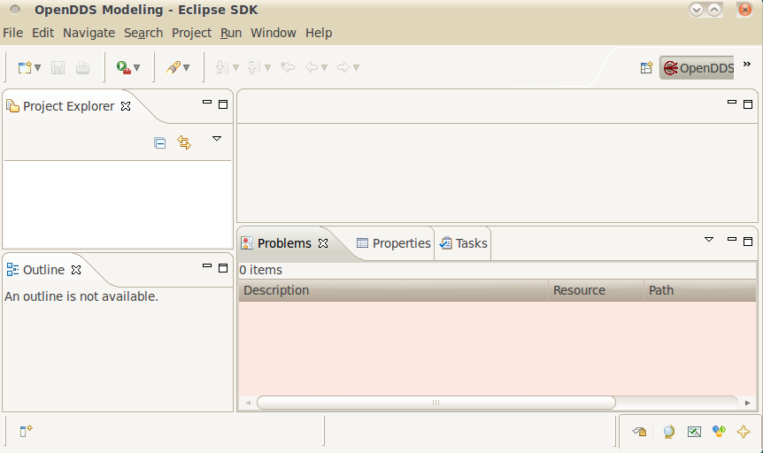

Eclipse has the concept of a perspective that shows predefined views such as Project Explorer and Properties in particular positions on the workbench. A perspective for the OpenDDS Modeling SDK is available to make it convenient to work with model diagrams.
This perspective can be activated by
These steps are shown in the following figure.

You should then see an Eclipse workbench that looks something like the following:
